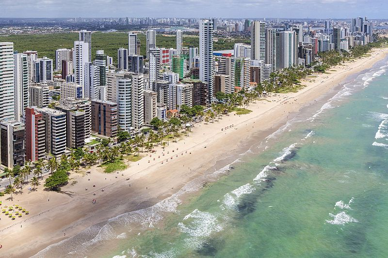

Conhecendo um pouco sobre Recife

Recife é um município brasileiro, capital do estado de Pernambuco, localizado na Região Nordeste do país. Com área territorial de aproximadamente 218 km², é formado por uma planície aluvial, tendo as ilhas, penínsulas e manguezais como suas principais características geográficas. Cidade nordestina com o melhor Índice de Desenvolvimento Humano (IDH-M), o Recife é a quarta capital brasileira na hierarquia da gestão federal, após Brasília, Rio de Janeiro e São Paulo, e possui o quarto aglomerado urbano mais populoso do Brasil, com 4 milhões de habitantes em 2017, superado apenas pelas concentrações urbanas de São Paulo, Rio de Janeiro e Belo Horizonte. A capital pernambucana tem, num raio de 300 km, três capitais estaduais sob sua influência direta: João Pessoa (122 km), Maceió (257 km) e Natal (286 km).
Praça do Marco Zero

Parte da região histórica do Recife Antigo, a praça é o local de onde se inicia a medição das distâncias das estradas do estado
A Praça Barão do Rio Branco, ou Praça do Marco Zero, está localizada na Av. Alfredo Lisboa, sem número.
A Praça do Marco Zero não é apenas o epicentro cultural de Recife, mas também o início de todos os caminhos de Pernambuco.
Conhecida pelo seu nome popular – Praça do Marco Zero, na verdade, é um apelido – o local se chama Praça Barão do Rio Branco e está localizada no Bairro do Recife, o Centro Histórico da cidade, que também atende por outra alcunha, mais popular: Recife Antigo.
Além de dar o nome oficial à praça, o Barão do Rio Branco também está representado no local por uma estátua em bronze de 2,80m de altura, feita pelo escultor francês Félix Charpentier.
O nome de Praça do Marco Zero se popularizou por conta da instalação, em 31 de janeiro de 1938, do Marco Zero de Recife, doado à cidade pelo Automóvel Clube de Pernambuco. A placa redonda posicionada na praça simboliza o centro geográfico de onde partem as medições para todas as estradas de Pernambuco.
Parque das Esculturas Francisco Brennand

De frente para a Praça do Marco Zero, sobre um dique natural que protege um estuário do Rio Capibaribe, foi construído em 2000 o Parque das Esculturas Francisco Brennand, que se tornou uma das maiores atrações turísticas da cidade.
O parque reúne dezenas de obras do artista plástico Francisco Brennand. A mais imponente delas é a Torre de Cristal, de 32 metros de altura, inspirada em uma flor descoberta pelo paisagista Roberto Burle Marx.
Para chegar ao Parque das Esculturas, é preciso fazer uma travessia de barco pelo Rio Capibaribe, com partida e retorno pela Praça do Marco Zero.
Centro de Artesanato de Pernambuco

Inaugurado em 2012, o Centro de Artesanato de Pernambuco rapidamente se tornou uma das referências da Praça do Marco Zero, tanto para turistas quanto para os moradores de Recife.
Localizado em um amplo galpão de 2,5 mil m², o espaço conta corredores amplos, vista privilegiada para o mar e mais de 25 mil peças à venda, feitas à mão por cerca de 1,8 mil artesãos de todos os cantos de Pernambuco.
O centro conta com divisões como sala de estar, quarto, sala de jantar e outros cômodos de uma casa, para que os visitantes possam visualizar como as peças artesanais poderiam ficar em seus lares. E as peças são feitas de matérias-primas das mais diversas, como renda, madeira, metal, cerâmica e vidro, entre outros.
Museu Cais do Sertão

Localizado em uma região de antigos armazéns do Porto do Recife, mais precisamente no Armazém 10, muito próximo da Praça do Marco Zero, o Museu Cais do Sertão conta com exposições temporárias e permanentes, que sempre trazem com referências à cultura do Sertão Nordestino, em especial ao grande homenageado do espaço: o músico Luiz Gonzaga.Com uma arquitetura inovadora, o espaço busca oferecer aos seus visitantes uma experiência interativa e sensorial, numa imersão à cultura sertaneja do Nordeste em pleno litoral. E também oferece diversos tipos de cursos, aulas e palestras.